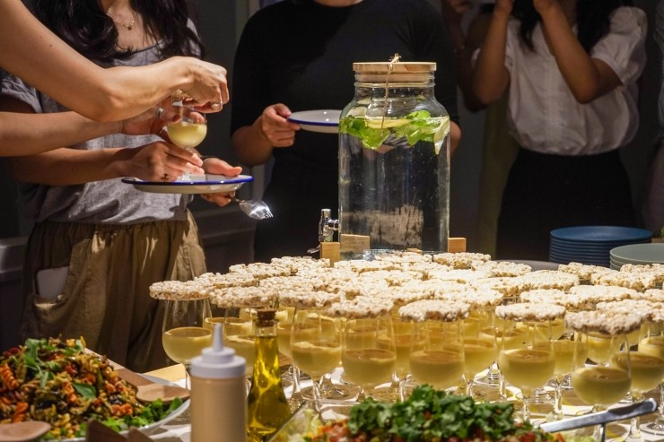
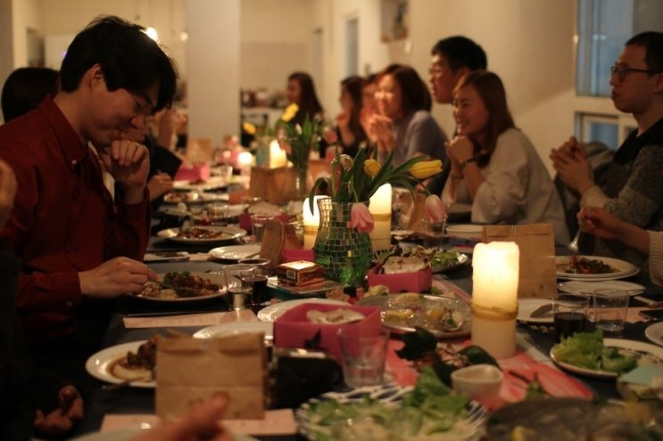
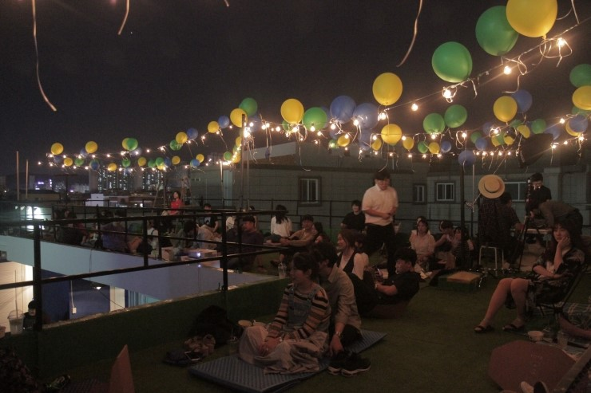
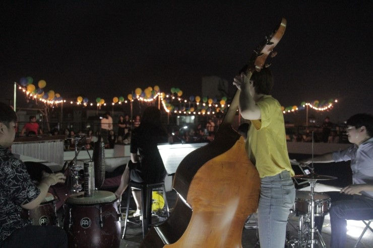
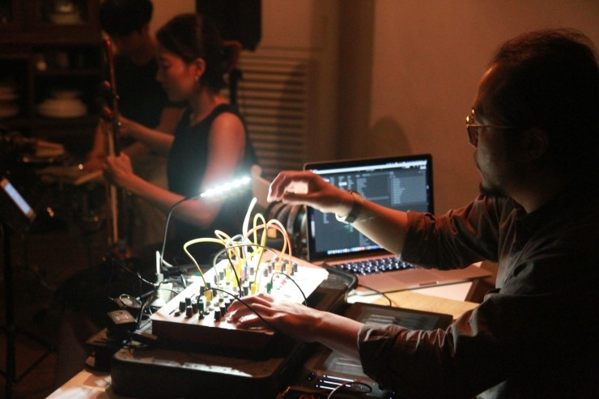
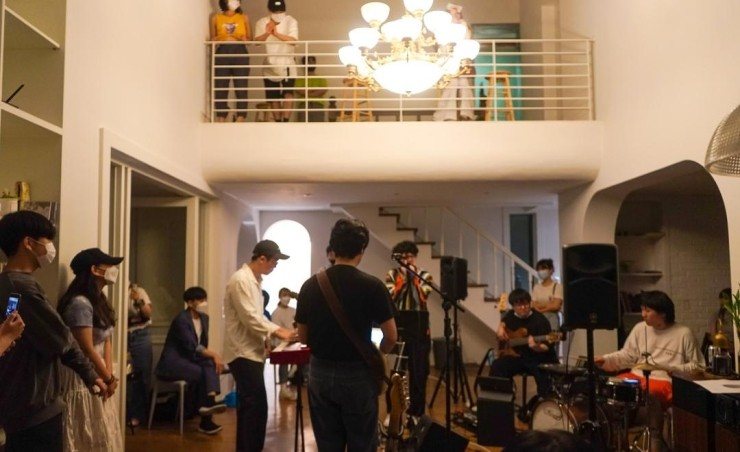

// OVERVIEW
공간 기반 커뮤니티 멤버십 '인더하우스'를 6년 넘게 운영하며, 오프라인 커뮤니티의 본질인 재구매를 위해 고객에게 밀착된 커뮤니티 서비스를 설계했습니다. 매월 감도 높은 오픈 이벤트와 타겟 메타 광고로 브랜드 이미지를 유지했고, 가입 전 인터뷰로 고객 성향을 파악해 신규 멤버를 밀착 관리하며 재구매율을 끌어올렸습니다.
// 수행 업무
- IMC 마케팅 전략 수립 — 잠재 고객 콘텐츠 기획, SNS·블로그 등 브랜드 채널 관리
- 퍼포먼스 마케팅 — 멤버십 모집 메타 광고 운영 (ROAS 240%, 1,830명 모집, CPC 300원 이하)
- 커뮤니티 운영 시스템 개발 (멤버십 평균 참여 5.7개월, 최대 47개월)
- IP 활용 행사 콘텐츠 기획·마케팅 총괄, 콘텐츠 기획·운영 (월 50+회, 누적 3,618회 · 참여 18,896명)
// 성과
57.2%
멤버십 재구매율
18,896명
누적 콘텐츠 참여자
240%
ROAS 유지
300원↓
CPC (클릭당 비용)
// 현장





